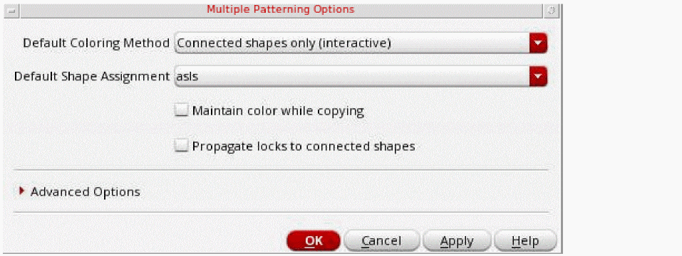
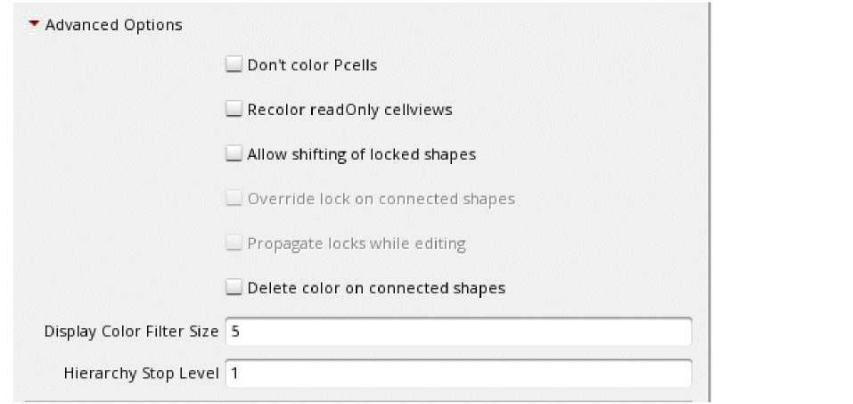

Modifying the Default Multi-Patterning Environment Variable Settings
To change the default multiple patterning environment variable settings:
-
Choose Options – Multiple Patterning.
The Multiple Patterning Options form appears.
 -
Choose the Default Coloring Method.
The coloring method applies only when the color engine is enabled. For both interactive and managed coloring methods, the color engine automatically colors connected shapes on the same layer. When the coloring method is managed, the color engine can also change the color of shapes to avoid same-mask spacing violations. - Choose the Default Shape Assignment.
-
Choose Maintain color while copying.
When enabled, the coloring information from the source objects is copied as-is to the corresponding destination objects when copying or using Make Cell. -
Choose Propagate locks to connected shapes.
When enabled, locks are automatically propagated to connected shapes when the lock is initiated from the Multiple Patterning toolbar. For more information on this option, see Color Locking on Connected Shapes. -
To specify Advanced Options, click the expand (triangle) button.
The Advanced Options appear.
- Choose Don’t color Pcells to prevent the recoloring of Pcells when running ReColor All or Update Color from the Multiple Patterning toolbar or using the mptReColor or mptUpdateColor SKILL function.
- Choose Recolor readOnly cellviews to recolor read-only cellviews when running ReColor All or Update Color from the Multiple Patterning toolbar or using the mptReColor or mptUpdateColor SKILL function. If not selected, only editable cellviews are recolored by those Multiple Patterning toolbar and SKILL functions.
- Choose Allow shifting of locked shapes to allow shifting of color-locked shapes. By default, shapes must be unlocked before shifting colors.
- Choose Override lock on connected shapes to allow color-locked shapes to change color to avoid color conflicts with connected shapes when a lock is initiated from the Multiple Patterning toolbar. By default, color-locked shapes cannot change color to avoid color conflicts. For more information on this option, see Color Locking on Connected Shapes.
- Choose Propagate locks while editing to automatically propagate locks to connected shapes on the same layer while editing. When this option is disabled and shapes are connected while editing (for example, when a shape is moved to connect to another shape), only the color of the shape can be propagated. When this option is enabled, the color state (lock) can also be propagated. For more information on this option, see Color Locking on Connected Shapes.
- Choose Delete color on connected shapes to delete the color on the shapes connected to the selected shape
- Specify Display Color Filter Size for the minimum shape size, in pixels, for which the color of the shape will be displayed. The color of shapes smaller than this size will not be displayed.
-
Specify Hierarchy Stop Level for the level to which shapes will be considered when coloring. A value of
1considers only top-level and level-1 shapes. A value of0considers only shapes on the current level. - Click OK or Apply.
Related Topics
Enabling the Multiple Patterning Color Engine
Customizing Displayed Coloring
Return to top